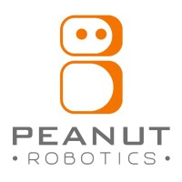
Mobile Manipulation · Peanut RoboticsMy first job out of grad school was building robots that clean hotel bathrooms.
July 2022 to April 2024 at Peanut Robotics as a Robotics Engineer, owning the manipulation subsystem, sensor integration, perception, and operator tooling on a mobile manipulator deployed in real hotels.
- Owned the arm software stack for a commercially deployed cleaning robot fleet: TOPPRA trajectory generation, ros_control execution, synchronized tool control, perception integration and operator tooling.
- Designed, prototyped and shipped live trajectory recording, reducing operator training for a new surface from 2 to 4 hours to about 15 minutes.
- Built an ICP and RANSAC point-cloud registration pipeline to measure room-to-room geometric variation and adapt taught cleaning trajectories.
- Evaluated six depth-camera systems across Orbbec, RealSense, Luxonis and ZED, then engineered the C++ bringup layer for four simultaneous cameras with heartbeat monitoring and automatic recovery.
- Deployed an OptiTrack ground-truth system to quantify arm droop, validate calibration accuracy and support controller and tracking investigations.
- The work supported a fleet of 10 active robots across 2 hotels, cleaning under a paid hourly contract.
I joined Peanut right out of CMU. The office was a single room in San Francisco - around 19 people, and a lot of robots. Peanut built custom mobile manipulators tasked for cleaning bathrooms in commercial hotels. We were deployed in 2 hotels, with 10 active robots cleaning and getting paid by the hour.
I owned the arm software and manipulation stack, while working across navigation, hardware, testing and sensor integration to make the complete robot reliable in hotels.
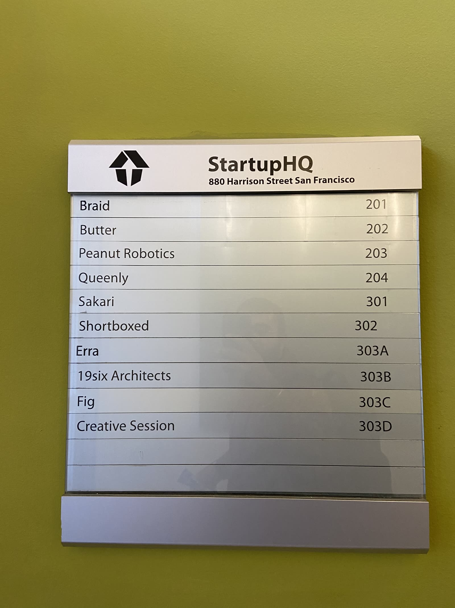
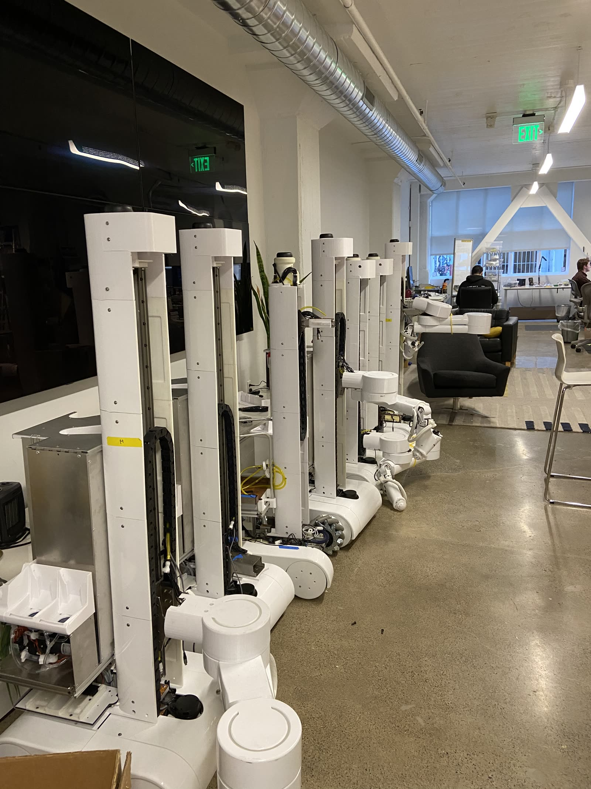
1. Live Trajectory
Operators taught trajectories with a joystick, jogging the arm to capture joint positions one at a time and chaining them into a path. For a complex object like a toilet, that took a skilled operator 2 to 4 hours, plus a lot of retraining. Since every new location had to be taught this way, teaching speed was a hard ceiling on how fast Peanut could scale.
I built a live trajectory system that let operators guide the arm by hand through a cleaning motion while recording the trajectory. I integrated it with the robot's recovery behaviors, spraying logic and synchronized tool control. The recorded path was time-parameterized with TOPPRA and executed through ros_control.
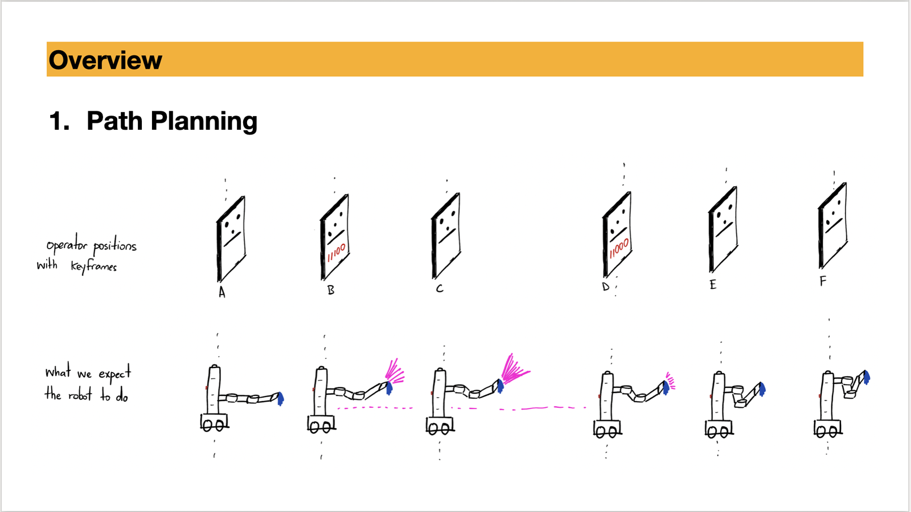
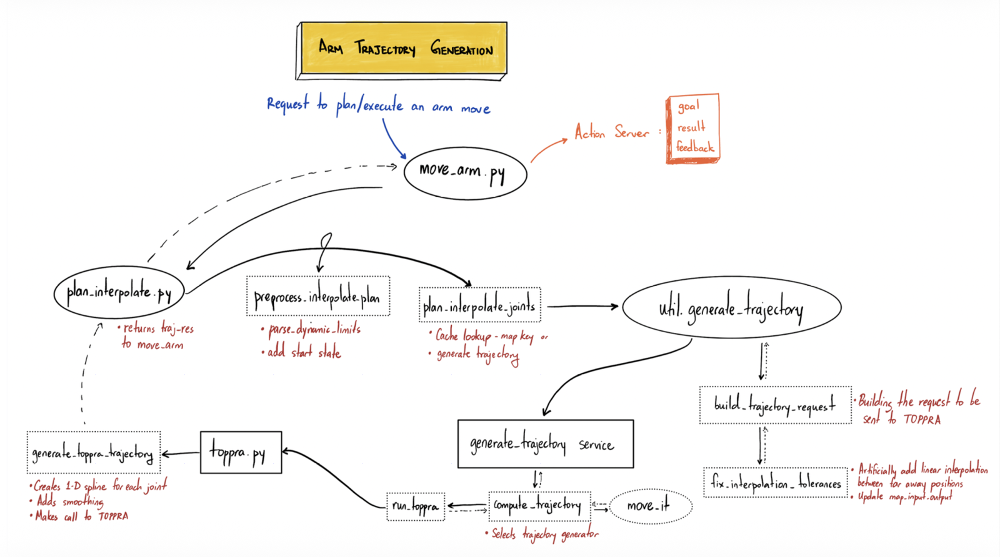
Impact
- Reduced operator training from 2 to 4 hours to about 15 minutes for complex surfaces such as toilet bowls and sinks with faucets.
- Improved paths along edges and corners. Hand guidance captured the surface contour directly instead of approximating it from sparse joystick keyframes.
- Made trajectories fast enough to use for prototyping. The team used them to compare cleaning tools, test contact quality, corners and ledges, vary scrubber RPM, evaluate flat surfaces, and run pressure tests on mirrors.
- Captured natural cleaning motions. Operators could demonstrate wrist roll and applied pressure directly instead of specifying them one joint position at a time.
Limitations and improvements
- Single-take recording: recording had to start from zero velocity, and pauses or hesitation became part of the trajectory. Planned improvements included trajectory stitching and post-processing to remove pauses.
- Tight spaces: physically guiding the arm was awkward inside bathrooms. Remote arm control was the proposed alternative.
- Invalid motions: operators could demonstrate accelerations or wrist movements the arm should not reproduce. Partially torquing the wrist motors would constrain those recordings.
- Resume behavior: existing resume functionality did not work with live-recorded paths. The planned fix was to support resuming TOPPRA trajectories.
2. Room to Room Variation
Even hotel bathrooms with the same layout vary, since fixtures sit a little differently from room to room. A trajectory taught in one bathroom doesn't directly transfer to the next: run it as-is and the arm collides or misses the surface, and the system can't scale to many rooms. I ran an in-depth study of where the variation actually lived, and found the toilet pose varies the most.
Built a point cloud registration pipeline that measures how far the toilet has shifted in a given bathroom, then applies that delta to the cleaning trajectory, either by moving the base or by shifting the arm trajectory itself. Used passive stereo depth (ZEDx) for the scan, and experimented with Cartesian planning through mission control to apply the correction.
Impact
Limitations and improvements
Registration depended on reliable depth, which was difficult on glossy plastic and porcelain. The depth-camera evaluation and integration below addressed that constraint.
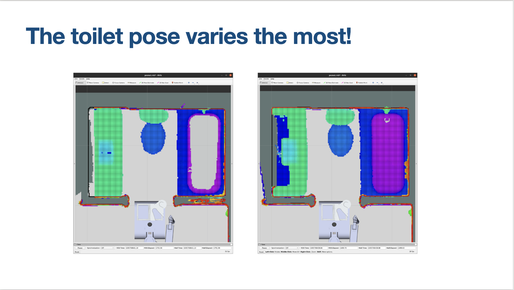
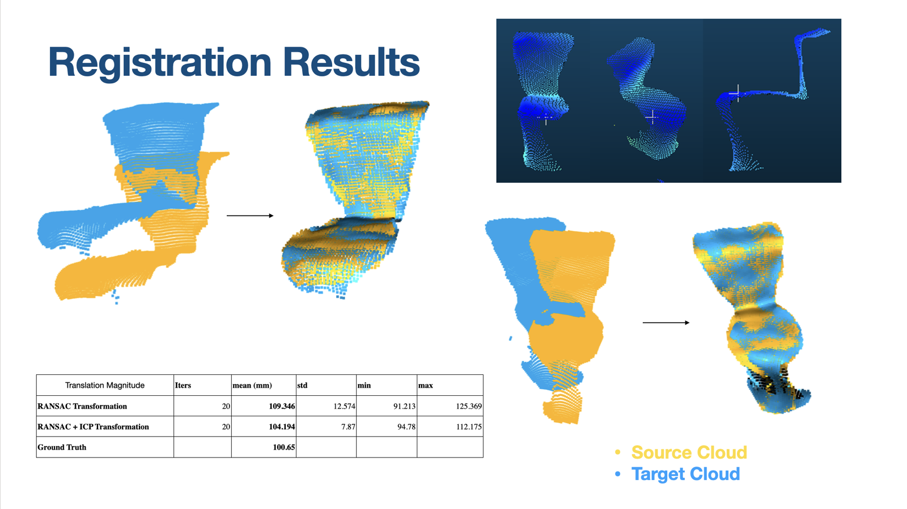
Getting reliable depth in a bathroom
Registration is only as good as the depth behind it, and bathrooms are a worst case for depth cameras. Light bounces off glossy plastic seats and porcelain (specular surfaces) and you get wavy, unreliable point clouds. On top of that, the robot needed four cameras running at once without one silently dropping out and degrading the whole stack.
Evaluated six depth-camera systems across Orbbec, RealSense, Luxonis, and ZED, weighing specular performance, range, width, and software tradeoffs, and chose the Orbbec, which had the best filtering for the bouncing light. Then built the integration: robust bringup of four cameras with a system heartbeat and an auto-recovery system, plus easy toggling and selection of depth streams to manage compute, debugging deep into the Orbbec SDK along the way.
Impact
Limitations and improvements
Four simultaneous depth streams increased compute load, and failures inside the camera SDK were difficult to diagnose. Stream selection reduced unnecessary processing, while the heartbeat and automatic recovery handled dropped cameras.
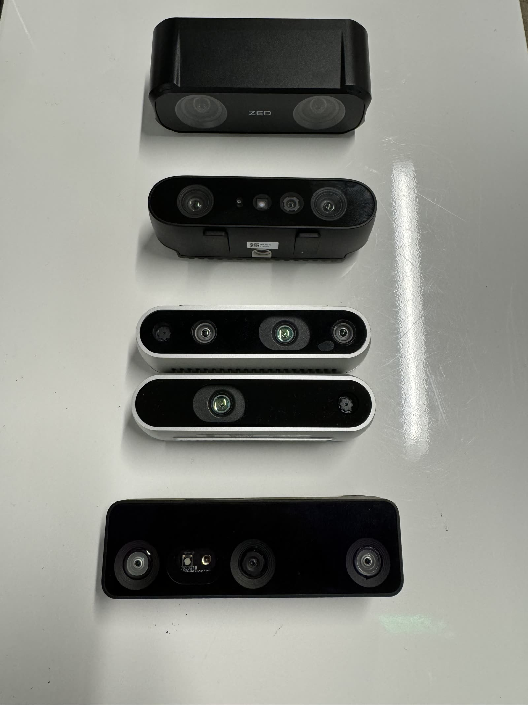
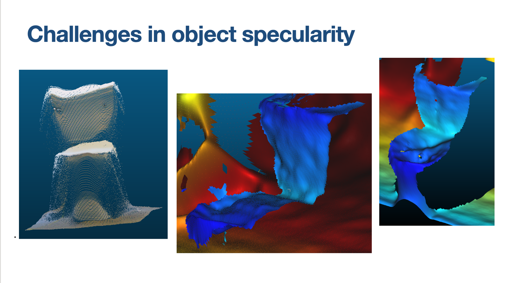
3. Optitrack
Because the arm is built in-house, there were real inconsistencies to chase down. The most notable was droop, where the arm sags from its commanded position under load. For contact cleaning, a few millimeters of error directly hurts clean quality, and it breaks sim-to-real because the model stops matching the physical robot.
Set up an Optitrack motion capture rig on the arm in-house and connected it to ROS, building out the kinematic chain, a lot of transform and frame math, and URDF cleanup. Profiled droop under different loads, then used the profiles to correct it and update the kinematic model.
Impact
Limitations and improvements
OptiTrack was an in-house measurement system rather than an onboard sensor. Its measurements were used to improve the robot's kinematic model and investigate errors that the robot could not measure accurately on its own. The board below lists the follow-up measurements; the highlighted cells are the ones I worked on.
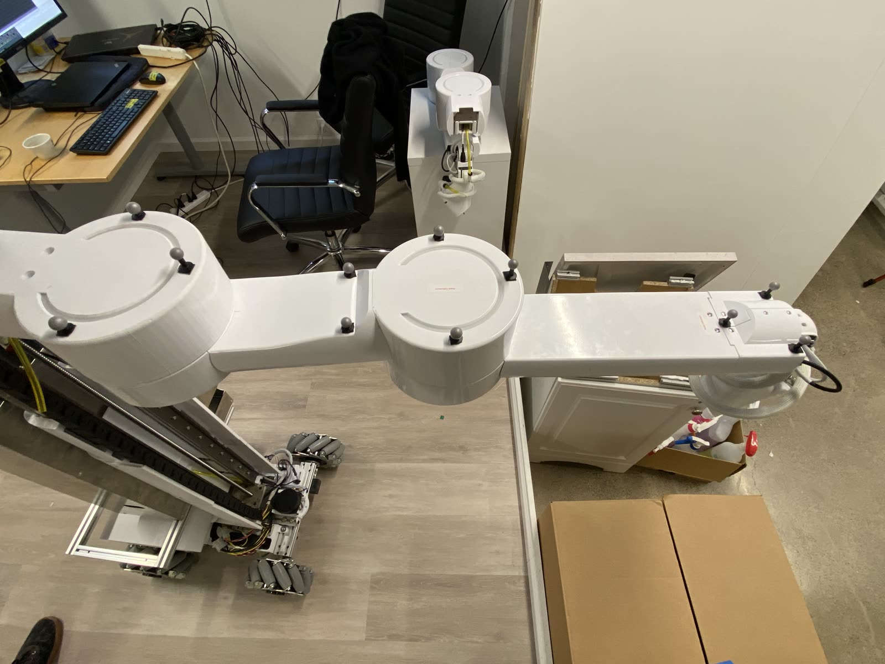
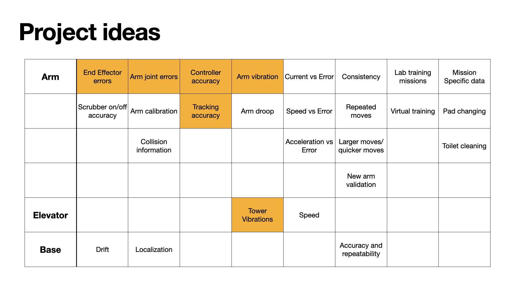
4. Other
Manufacturing test suite
Robots kept breaking down in the field, and diagnosing them remotely was slow. When something went wrong, an operator with no engineering background needed a way to find out what was broken without an engineer on a call.
Built a manufacturing test suite operators could run as scripts to get a clear report of what was and wasn't working, from the low level (individual arm motors, IDs, baud rates, udev rules) up to full-system checks (complete motion, reported currents, spikes, end-effector behavior), at small, medium, and large scale. Also shipped a simple arm calibration tool so operators could calibrate the arm themselves.
Impact
Limitations and improvements
Component-level checks were not enough to capture failures that appeared only during full robot motion. I expanded the suite from individual devices and configuration checks to complete motion, current, spike and end-effector tests at multiple scales.
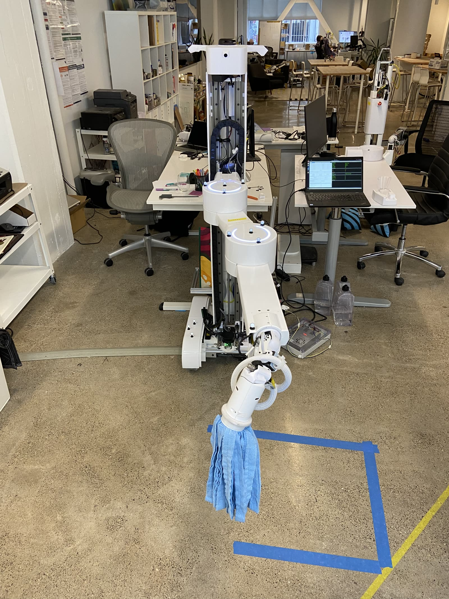
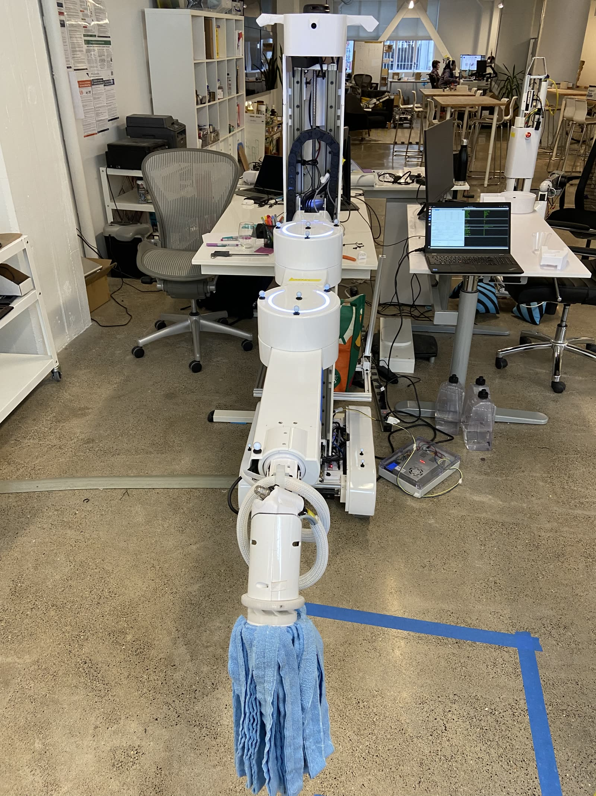
Navigation
Alongside the manipulation work, I spent time on the navigation stack: SLAM mapping with
gmapping, testing move_base and then Nav2 with the MPPI controller
in simulation and on the real robot, including obstacle-avoidance and wall-following runs. The
robot has to get itself to and around the work area reliably before the arm can do anything.
Hardware & sensors
A mobile manipulator is many subsystems (arm, base, elevator, scrubber, and a stack of sensors), and a deployed robot only works if all of them do. I did bring-up and debugging across Dynamixel servos, DC and stepper motors, a BLDC base motor, hall sensors (latching and distance), crush sensors, encoders, limit switches, and a magnetometer. Plus low-level system and performance work: a udev-rules wizard to automate device setup, and optimizing Dynamixel syncRead from 15 ms to 10 ms to tighten the arm's control-loop rate.
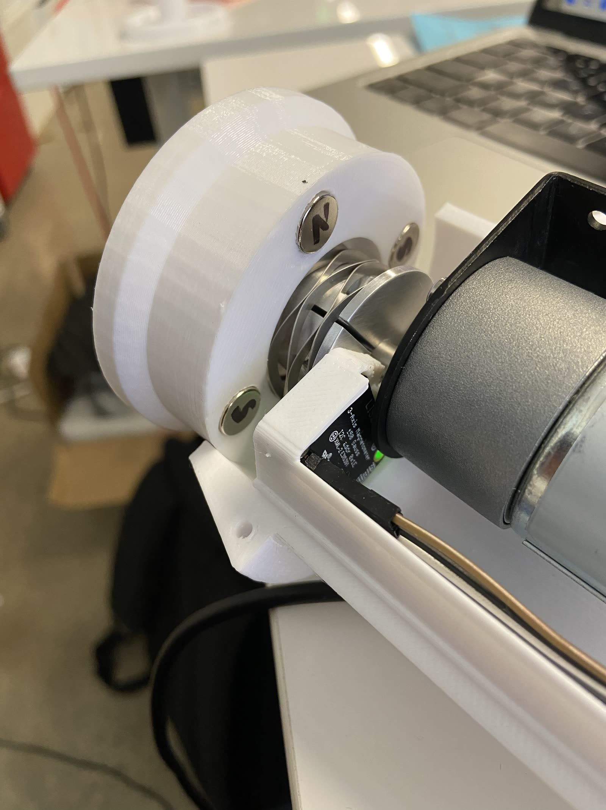
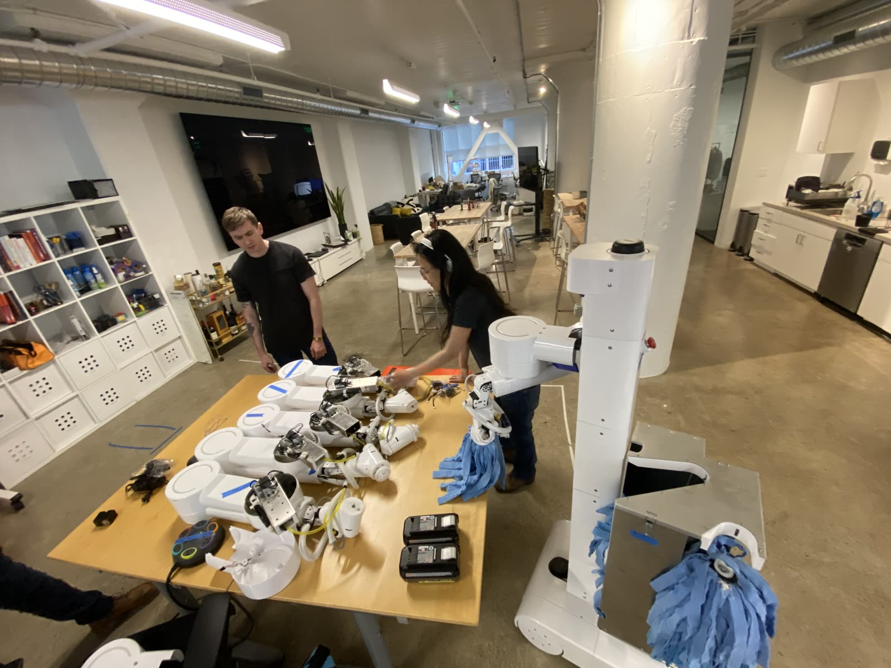